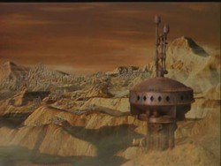

Iconia |
|
||||||
|  |
Iconia è stato scoperto nel 2365
dal Capitano Donald Varley della Yamato.
Varley aveva scoperto che Iconia
si trova nella Zona Neutrale Romulana
e ha violato il trattato di pace temendo che i Romulani
potessero acquisire la tecnologia iconiana.